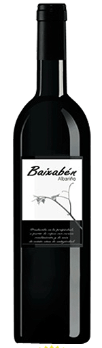
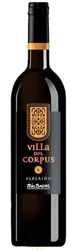

Rias Baixas D.O., the wine region where Albariño wine is grown means the lower firths. The vines are mounted on granite pergolas called “parrales”, the purpose is to protect them from frost as well as provide maximum exposure to the foliage. The best soils for cultivating Albarino vines are granitic or slate, fortunately Galicia is the world’s biggest slate producer thanks to its abundance, the same can also be said for granite where there are vast deposits..

BAIXABÉN.
Winery: Adega Rubén.
Destemming, maceration and static settling of the juice. Alcoholic fermentation in stainless steel under automatic temperature control (16º).
90% Albariño, 10% Treixadura
12% vol.
Straw colour wine, clean, bright.
Intense and fruit bouquet. LIght, fruity, green apple, stone fruit, soft acidity . Treixadura variety adds complexity. Long finish. Perfect to match with spanish tapas. High value wine at a surprising price.

Villa del Corpus.
Winery: Adega Rubén.
Destemming, maceration and static settling of the juice. Alcoholic fermentation in stainless steel under automatic temperature control (16º).
100% Albariño
12,5% vol.
Straw colour wine, clean, bright.
Very Intense and fruit bouquet, good acidity, zesty, citrus, green apple, which brings to mind the variety “Albariño”. The post-taste recalls again the fruit sensations previously noticed in the nose. Very long finish, very savory. Perfect to be matched with seafood. High value wine.